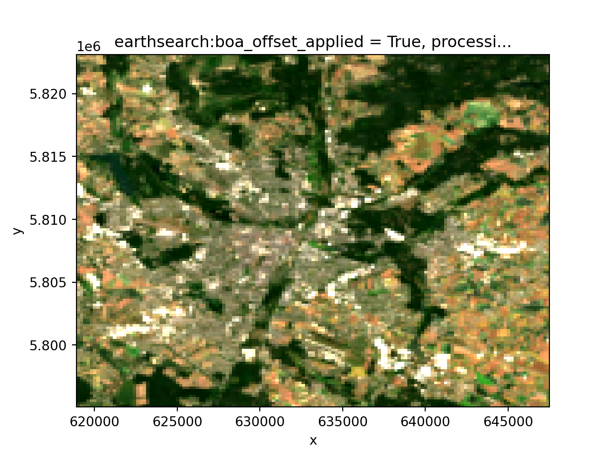
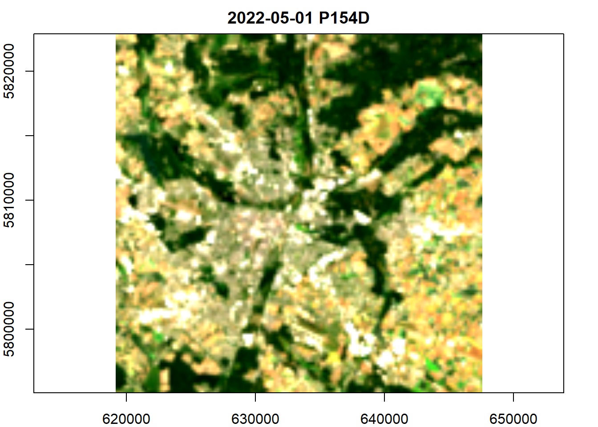

![]()
import dask.array as da # handle dask arrays
import geopandas as gpd # handle geospatial data frames
from IPython.display import Image # visualize URLs
import pystac_client # connecting to the STAC API
from rasterio.enums import Resampling # perform re-sampling operations
import shapely # create vector objects
import stackstac # build an on-demand STAC data cubeSome background
Over a month ago I was invited as a lecturer at the OpenGeoHub 2023 Summer School in Poznan, Poland. It was a great experience, meeting brilliant people, learning from other lecturers and enjoying the city. Many thanks to the organizers!
My lecture was on Tools and packages to query and process Sentinel-1 and Sentinel-2 data with R and Python. Following on the lecture and inspired by the geocompx blogpost on geographic data analysis in R and Python, I started the quest to do a similar post with the basic content of my lecture.
Why do I call it a quest? Well, it took me a while. Before this post, my website was based on distill, so the migration process from a distill-based website to a quarto-based one was the first task. Why did I have to do the migration? Because Quarto allows the combination of two or more programming languages in a single file, crucial for data science across languages.
I managed to migrate thanks to JaKub Nowosad’s talk at OpenGeoHub23 (Nowosad 2023), the Quarto documentation and to posts from Danielle Navarro (Navarro 2022). Big thanks!
But in any case, I can now inaugurate my new website with a post on how to query STAC data and create on-demand data cubes with R and Python! So let’s get to it.
Libraries
Let’s first load the libraries needed. Here you can get familiar with the tab setting of this post. Clicking on the R or Python tab will switch between languages. Clicking on either tab will switch the panel in the whole document.
library(dplyr) # data wrangling
library(gdalcubes) # on-demand data cubes
library(knitr) # visualize URLs
library(rstac) # connecting to the STAC API
library(sf) # handle geospatial data framesQuerying STAC data
STAC stands for SpatioTemporal Asset Catalog and it is “a common language to describe geospatial information, so it can more easily be worked with, indexed, and discovered”.
There are several APIs available to query data, you can browse them all in the STAC catalog index. Some of these APIs will require authentication to access the data. We will use the Earth Search catalog for this post, which allows querying data on Amazon Web Services (AWS). The data we will fetch (Sentinel-2) does not require authentication.
In Python we can use the pystac-client library (Duckworth 2021), while in R we can use the rstac library (Simoes et al. 2021). Refer to their documentation pages for more information.
To start fetching data, we will open a client. We can then see the collections available for this API. In Python we call a for loop on the client collections, while in R we use the get_request() function. Both methods make an HTTP GET request to STAC web services.
api_url = 'https://earth-search.aws.element84.com/v1'
client = pystac_client.Client.open(api_url)
for collection in client.get_collections():
print(collection)<CollectionClient id=sentinel-2-c1-l2a-preview>
<CollectionClient id=cop-dem-glo-30>
<CollectionClient id=naip>
<CollectionClient id=sentinel-2-l2a>
<CollectionClient id=sentinel-2-l1c>
<CollectionClient id=cop-dem-glo-90>
<CollectionClient id=sentinel-1-grd>
<CollectionClient id=landsat-c2-l2>api_url = "https://earth-search.aws.element84.com/v1"
client = stac(api_url)
collections(client) |> get_request()###STACCollectionList
- collections (8 item(s)):
- sentinel-2-c1-l2a-preview
- cop-dem-glo-30
- naip
- sentinel-2-l2a
- sentinel-2-l1c
- cop-dem-glo-90
- sentinel-1-grd
- landsat-c2-l2
- field(s): collections, links, contextWe will choose here Sentinel-2 Level 2a data, which provides atmospherically corrected data representing surface reflectance.
We can also set the coordinates for our query, in this case a POINT geometry, which will help to retrieve scenes that intersect with it. At last we can also set a time extent, where we define the start and end of our query.
# collection ID
collection = 'sentinel-2-l2a'
# coordinates
lon = 16.9
lat = 52.4
point = shapely.Point(lon, lat)
# date range
time_extent = '2022-05-01/2022-10-01'# collection ID
collection = 'sentinel-2-l2a'
# coordinates
lon = 16.9
lat = 52.4
point = st_point(c(lon, lat))
# date range
time_extent = c("2022-05-01", "2022-10-01")Now, we can pass the arguments to our search. Note for the R search we had to slightly format the datetime parameter. This is because of a bug when fetching the data from STAC.
You will see we can also query based on scene metadata. In this example we look for scenes with cloud cover lower than 10% for the whole scene. In Python we do the filtering within the search, while in R we perform it after the HTTP POST request.
Finally, we check how many items we fetched with our query, also to compare that R and Python give us the same results.
search = client.search(
collections=[collection],
intersects=point,
datetime=time_extent,
query=["eo:cloud_cover<10"],
)
items = search.item_collection()
len(items)8items = client |>
stac_search(
collections = collection,
intersects = point,
datetime = paste0(time_extent,"T00:00:00Z", collapse = "/"),
limit = 100
) |>
post_request() |>
items_filter(
filter_fn = function(x) {x$properties$`eo:cloud_cover` < 10}
)
items_length(items)[1] 8To explore the items as data frames we can either convert to a geopandas table in Python or to an sf table in R. We added an extra fid column to allow index matching to the original item list.
items_df = gpd.GeoDataFrame.from_features(items.to_dict(), crs="epsg:4326")
items_df geometry ... updated
0 POLYGON ((16.49848 53.24020, 17.39166 53.22562... ... 2022-11-06T13:14:57.270Z
1 POLYGON ((16.49848 53.24020, 17.39346 53.22558... ... 2022-11-06T12:53:48.090Z
2 POLYGON ((16.49848 53.24020, 18.14175 53.20819... ... 2022-11-06T13:12:58.202Z
3 POLYGON ((16.49848 53.24020, 18.14175 53.20819... ... 2022-11-06T13:14:37.621Z
4 POLYGON ((16.49848 53.24020, 18.14175 53.20819... ... 2022-11-06T12:54:05.312Z
5 POLYGON ((16.49848 53.24020, 17.39346 53.22558... ... 2022-11-06T12:55:07.931Z
6 POLYGON ((16.49848 53.24020, 18.14175 53.20819... ... 2022-11-06T12:52:50.337Z
7 POLYGON ((16.49848 53.24020, 18.14175 53.20819... ... 2022-11-06T13:16:38.195Z
[8 rows x 42 columns]# we add an extra column to be able to subset the original item list
items_df = items_as_sf(items) |>
mutate(fid = row_number())
# wrap function around st_as_sf and as_tibble just for nicer printing
st_as_sf(as_tibble(items_df))Simple feature collection with 8 features and 42 fields
Geometry type: POLYGON
Dimension: XY
Bounding box: xmin: 16.465 ymin: 52.22258 xmax: 18.14175 ymax: 53.2402
Geodetic CRS: WGS 84
# A tibble: 8 × 43
`s2:generation_time` s2:medium_proba_clouds_percenta…¹ `s2:product_uri`
<chr> <dbl> <chr>
1 2022-08-26T16:20:59.000000Z 0.00172 S2A_MSIL2A_2022…
2 2022-08-16T16:25:57.000000Z 2.27 S2A_MSIL2A_2022…
3 2022-08-03T13:51:55.000000Z 5.69 S2A_MSIL2A_2022…
4 2022-07-19T11:39:43.000000Z 0.00007 S2B_MSIL2A_2022…
5 2022-07-14T17:50:57.000000Z 1.29 S2A_MSIL2A_2022…
6 2022-06-27T16:28:10.000000Z 0.732 S2A_MSIL2A_2022…
7 2022-06-24T14:39:14.000000Z 0.00130 S2A_MSIL2A_2022…
8 2022-06-19T11:43:29.000000Z 0.0514 S2B_MSIL2A_2022…
# ℹ abbreviated name: ¹`s2:medium_proba_clouds_percentage`
# ℹ 40 more variables: `s2:processing_baseline` <chr>, `grid:code` <chr>,
# `s2:product_type` <chr>, `s2:snow_ice_percentage` <dbl>,
# `s2:vegetation_percentage` <dbl>, `processing:software` <chr>,
# `s2:high_proba_clouds_percentage` <dbl>,
# `s2:unclassified_percentage` <dbl>, `s2:water_percentage` <dbl>,
# `s2:not_vegetated_percentage` <dbl>, `s2:cloud_shadow_percentage` <dbl>, …When we have the items as data frame, we can further filter the data based on the table columns. Below, we filter for data with a cloud cover lower than 2% and with a no-data pixel percentage below 10%.
To illustrate how to fetch item properties, we can select the first item in our list and get the datetime of this scene.
ids = items_df.loc[
(items_df['eo:cloud_cover'] <= 2) &
(items_df['s2:nodata_pixel_percentage'] <= 10)
]
item = items[ids.index[0]]
item.datetimedatetime.datetime(2022, 7, 19, 10, 6, 8, 645000, tzinfo=tzutc())ids = items_df |>
filter(
`eo:cloud_cover` <= 2, `s2:nodata_pixel_percentage` <= 10
) |>
pull(fid)
item = items$features[[ids[1]]]
item$properties$datetime[1] "2022-07-19T10:06:08.645000Z"We can also take a look at the selected scene by fetching the item thumbnail. Here you will see that both R and Python return the same scene, as they should! 😉.
thumbnail = item.assets["thumbnail"].href
Image(url = thumbnail)
item |>
assets_url(asset_names = "thumbnail") |>
include_graphics()
Creating a STAC data cube
Fetching individual scenes is interesting, but the real power of working with the STAC API is the possibility to work with big EO data without the need to download a single pixel to your own computer!
For this, we can create an on-demand data cube that can help us organize and analyze our data, doing the data wrangling needed and only fetching the data we need as a final step.
To create on-demand data cubes, we will use R’s gdalcubes (Appel, Pebesma, and Mohr 2021) and Python’s stackstac (Joseph 2023).
We will create our data cube on a smaller subset. Here we load a GeoJSON file of Poznan, where the summer school took place. We read it in and extract its bounding box.
poznan = "https://raw.githubusercontent.com/loreabad6/ogh23/main/data/poznan.geojson"
footprint = gpd.read_file(poznan)
bbox = footprint.total_boundspoznan = "https://raw.githubusercontent.com/loreabad6/ogh23/main/data/poznan.geojson"
footprint = read_sf(poznan)
bbox = footprint |> st_transform(crs = 32633) |> st_bbox()Now we can create our cube. The following code chunk has several steps depending if you are in the R or Python tab. I kept it as a single block since this is how we get an on-demand data cube on each end. In essence what we do is:
- Define the assets we want.
I selected RGB+NIR bands to illustrate this process, but of course we can set any other band. I included the SCL band, which we will use to mask clouds.
- Set-up the cube.
- In Python we do this with the
stackstac.stackfunction, where we can set the resolution, assets, bounding box, and re-sampling method for the data. Separately we define a cloud mask to get remove invalid pixels. - In R, this works in a lengthier way, using more intermediate functions. We first define the collection with the assets with the
stac_image_collectionfunction. Then, we define an extent in the form of a list. This extent will have the start and end date as well as the bounding box of our cube. Now we can define aview, which defines the CRS, spatial and temporal resolution, and the aggregation and re-sampling method. We finally define the cloud mask withimage_maskand can then build araster_cube.
assets = ["red","green","blue","nir","scl"]
cube_all = stackstac.stack(
items,
assets=assets,
resolution=200,
bounds_latlon=bbox,
resampling=Resampling.bilinear
)
scl = cube_all.sel(band=["scl"])
s2_mask = da.isin(scl, [3,8,9])
cube = cube_all.where(~s2_mask)
cube<xarray.DataArray 'stackstac-488683ba46ca080d7bae3993b8b89142' (time: 8,
band: 5,
y: 140, x: 143)>
dask.array<where, shape=(8, 5, 140, 143), dtype=float64, chunksize=(1, 1, 140, 143), chunktype=numpy.ndarray>
Coordinates: (12/52)
* time (time) datetime64[ns] 2022-06-19...
id (time) <U24 'S2B_33UXU_20220619_...
* band (band) <U5 'red' 'green' ... 'scl'
* x (x) float64 6.19e+05 ... 6.474e+05
* y (y) float64 5.823e+06 ... 5.795e+06
s2:generation_time (time) <U27 '2022-06-19T11:43:29...
... ...
raster:bands (band) object {'nodata': 0, 'dat...
title (band) <U30 'Red (band 4) - 10m'...
common_name (band) object 'red' ... None
center_wavelength (band) object 0.665 0.56 ... None
full_width_half_max (band) object 0.038 0.045 ... None
epsg int32 32633
Attributes:
spec: RasterSpec(epsg=32633, bounds=(619000, 5795000, 647600, 5823...
crs: epsg:32633
transform: | 200.00, 0.00, 619000.00|\n| 0.00,-200.00, 5823000.00|\n| 0...
resolution: 200assets = c("red","green","blue","nir","scl")
col = stac_image_collection(items$features, asset_names = assets)
extent = list(
t0 = time_extent[1], t1 = time_extent[2],
left = bbox["xmin"], bottom = bbox["ymin"],
right = bbox["xmax"], top = bbox["ymax"]
)
view = cube_view(
srs = "epsg:32633",
extent = extent,
dx = 200, dy = 200, dt = "P1D",
aggregation = "median",
resampling = "bilinear"
)
s2_mask = image_mask("scl", values = c(3,8,9))
cube = raster_cube(col, view, mask = s2_mask)
cubeA data cube proxy object
Dimensions:
low high count pixel_size chunk_size
t 2022-05-01 2022-10-01 154 P1D 1
y 5795085.08512264 5822885.08512264 139 200 128
x 619173.072575812 647573.072575812 142 200 128
Bands:
name offset scale nodata unit
1 blue 0 1 NaN
2 green 0 1 NaN
3 nir 0 1 NaN
4 red 0 1 NaN
5 scl 0 1 NaN And now we have a data cube! Let’s so a simple reduction over time of our data to view an RGB composite.
rgb = cube.sel(band=["red", "green", "blue"]).median("time", keep_attrs=True)
rgb = rgb.compute()
rgb.plot.imshow(
rgb="band",
robust=True
)
gdalcubes_options(parallel = 4, cache = TRUE)
rgb = cube |>
select_bands(c("blue","green","red")) |>
reduce_time(c("median(blue)", "median(green)", "median(red)"))
rgb |>
plot(rgb = 3:1) 
And there we have it, a side by side how-to create on-demand STAC data cubes. If you want to get more functionalities and examples on what can be done with the packages please refer to the materials of my lecture: Tools and packages to query and process Sentinel-1 and Sentinel-2 data with R and Python.
Happy STACing!
References
Appel, Marius, Edzer Pebesma, and Matthias Mohr. 2021. “Cloud-Based Processing of Satellite Image Collections in r Using STAC, COGs, and on-Demand Data Cubes.” 2021. https://r-spatial.org/r/2021/04/23/cloud-based-cubes.html.
Duckworth, Jon. 2021. “STAC Python Client.” 2021. https://pystac-client.readthedocs.io/en/stable/index.html.
Joseph, Gabe. 2023. “Stackstac: Easier Cloud-Native Geoprocessing.” 2023. https://stackstac.readthedocs.io/en/latest/.
Nowosad, Jakub. 2023. “Sharing Your Geospatial Knowledge in the Open.” 2023. https://www.youtube.com/watch?v=AUt-GOZJQaY&ab_channel=TomislavHengl%28OpenGeoHubFoundation%29.
Simoes, Rolf, Felipe Souza, Matheus Zaglia, Gilberto Ribeiro Queiroz, Rafael Santos, and Karine Ferreira. 2021. “Rstac: An r Package to Access Spatiotemporal Asset Catalog Satellite Imagery.” In 2021 IEEE International Geoscience and Remote Sensing Symposium IGARSS, 7674–77. https://doi.org/10.1109/IGARSS47720.2021.9553518.
Reuse
Citation
BibTeX citation:
@online{abad2024,
author = {Abad, Lorena},
title = {STAC Across {Languages}},
date = {2024-07-15},
langid = {en}
}
For attribution, please cite this work as:
Abad, Lorena. 2024. “STAC Across Languages.” July 15, 2024.